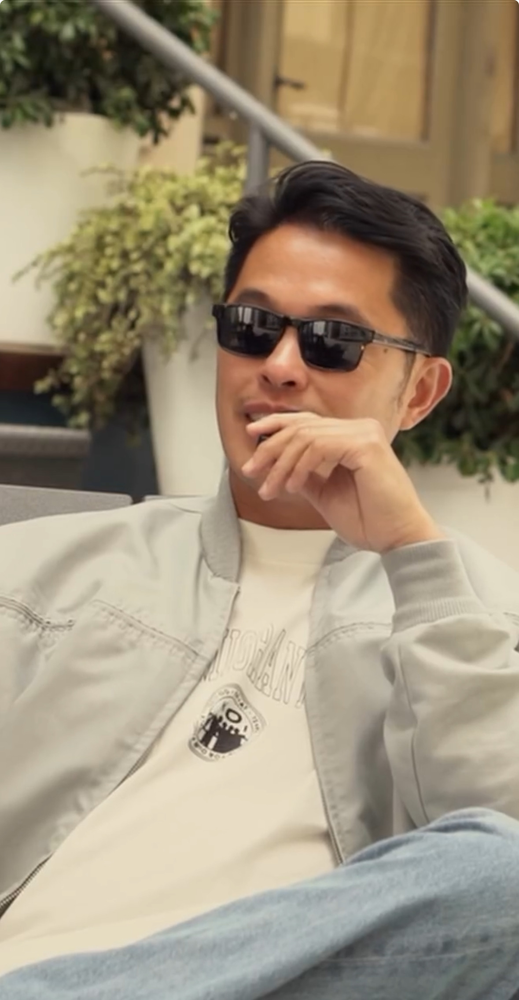

I tell stories about people who build things with their hands, their communities, and their convictions. Through video, writing, and creative strategy, I work with founders, artists, and makers to surface the deeper narratives behind what they do, the kind that don't show up in press coverage or social feeds.
I'm drawn to the spaces where culture is being made in real time: a coffee roaster whose activism shaped his entire business philosophy. A painter working through The Grapes of Wrath in her home studio. An ice cream maker whose flavors trace a line from Tanzania to Oakland. A musician from New Jersey who treats every track like an audio journal. I show up with genuine curiosity, earn the conversation before I ever turn the camera on, and find the thread that makes the story worth telling.
I spent nearly a decade in tech, building systems, partnerships, and revenue. The work taught me a lot. But the most interesting part was always the conversations, not the dashboards. The founders I admired most weren't optimizing for metrics. They were building something they believed in and figuring out how to bring people along for the ride. I wanted to tell those stories instead of just watching them happen.
That instinct became Archival Live, a documentary storytelling studio I founded to slow things down long enough to notice the work, the rituals, and the people behind them before they're flattened by feeds or forgotten by time.
Today I'm producing documentary work with Peakbound Studios and Reiner Films, directing my own projects, and writing in-depth brand stories for founders and makers across the Bay Area, all through a studio rooted in resonance over perfection, connection over content.
If you're building something real, something physical, relational, and alive with soul, I'd love to work together.
Get in touch